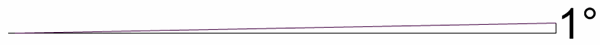
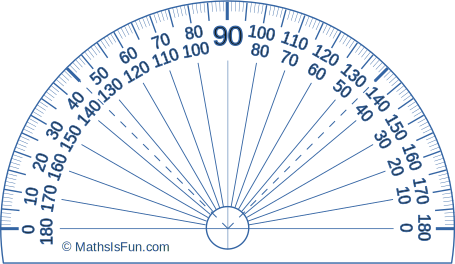
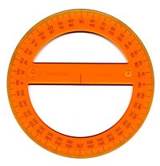

Degrees (Angles)
We can measure Angles in Degrees.
There are 360 degrees in one Full Rotation (one complete circle around).
(Angles can also be measured in Radians)
(Note: "Degrees" can also mean Temperature, but here we are talking about Angles)
The Degree Symbol: °
We use a little circle ° following the number to mean degrees.
For example 90° means 90 degrees
One Degree

This is how large 1 Degree is

The Full Circle
A Full Circle is 360°
Half a circle is 180°
(called a Straight Angle)
Quarter of a circle is 90°
(called a Right Angle)
Why 360 degrees? Probably because old calendars (such as the Persian Calendar) used 360 days for a year - when they watched the stars they saw them revolve around the North Star one degree per day. Also 360 can be divided exactly by 2, 3, 4, 5, 6, 8, 9, 10, 12, 15, 18, 20, 24, 30, 36, 40, 45, 60, 72, 90, 120 and 180, which makes a lot of basic geometry easier. |
Measuring Degrees
We often measure degrees using a protractor:
The normal protractor measures 0° to 180°
|  | There are also full-circle protractors. But they are not as commonly used because they are a bit big and don't do anything special. |